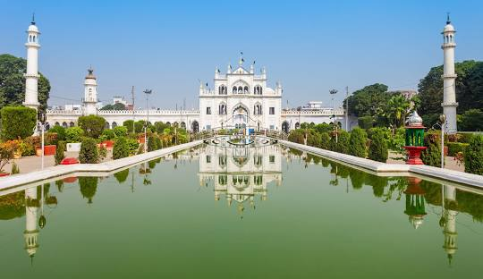
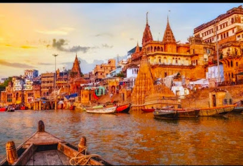
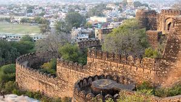
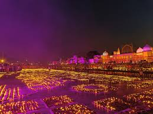

Cities And Places
Lucknow
- Bara Imambara: A grand historical monument known for its stunning architecture and intricate labyrinth.
- Chota Imambara: A beautiful mosque adorned with chandeliers and surrounded by lush gardens.
- Rumi Darwaza: An impressive gateway that exemplifies Awadhi architecture, often referred to as the "Turkish Gate."

- Hazratganj: A bustling shopping area known for its colonial architecture and vibrant atmosphere.
- Ambedkar Memorial Park: A large park dedicated to Dr. B.R. Ambedkar, featuring impressive statues and landscaping.
- Gomti Riverfront: A scenic waterfront area perfect for leisurely walks, boating, and enjoying the sunset.
Agra
- Taj Mahal: An iconic symbol of love, this stunning mausoleum is a UNESCO World Heritage Site and a must-visit.
- Agra Fort: A historical fort with impressive architecture and rich history, also a UNESCO World Heritage Site.
- Mehtab Bagh: A beautiful garden offering a stunning view of the Taj Mahal across the Yamuna River.

- Fatehpur Sikri: A former Mughal capital, known for its stunning architecture and historical significance.
- Itimad-ud-Daulah's Tomb: Often referred to as the "Baby Taj," this beautiful tomb is known for its intricate marble work.
- Jama Masjid: A grand mosque built by the Mughal emperor Shah Jahan, showcasing impressive architecture.
Varanasi
- Dashashwamedh Ghat: The most famous ghat on the Ganges, known for its evening Aarti ceremony.
- Kashi Vishwanath Temple: A revered Hindu temple dedicated to Lord Shiva, one of the holiest shrines in India.
- Sarnath: The site where Buddha gave his first sermon, featuring beautiful stupas and museums.

- Banaras Hindu University: One of the oldest universities in India, known for its beautiful campus and rich history.
- Manikarnika Ghat: The main cremation ghat, an important site for Hindus and a place to witness the city's spiritual rituals.
- Ramnagar Fort: A historic fort on the banks of the Ganges, showcasing a blend of Mughal and Indian architecture.
Kanpur
- Allen Forest Zoo: A large zoo set in a lush green area, home to various animal species and a beautiful garden.
- J.K. Temple: A stunning temple known for its beautiful architecture and serene environment.
- Kanpur Memorial Church: A historical church built in memory of the British soldiers, showcasing Gothic architecture.

- Phool Bagh: A popular park featuring beautiful gardens, fountains, and a monument for relaxation and leisure.
- Kanpur Institute of Technology: A renowned educational institution known for its engineering programs and campus.
- Ganga Barrage: An impressive dam on the Ganges River, offering scenic views and recreational activities.
Meerut
- Augharnath Mandir: A historic temple dedicated to Lord Shiva, known for its beautiful architecture and religious significance.
- Shahid Smarak: A memorial dedicated to the martyrs of the First War of Independence in 1857, set in a serene park.
- Suraj Kund: A large historical water tank surrounded by gardens, ideal for picnics and relaxation.

- Meerut Museum: A museum featuring historical artifacts, paintings, and exhibits related to the city's rich history.
- St. John's Church: An old church known for its stunning architecture and peaceful ambiance.
- Iskcon Temple: A beautiful temple dedicated to Lord Krishna, offering spiritual activities and events.
Other Attractions
Vrindavan
- Banke Bihari Temple: A famous temple dedicated to Lord Krishna, known for its vibrant atmosphere and beautiful architecture.
- ISKCON Vrindavan: The International Society for Krishna Consciousness temple, featuring beautiful deities and peaceful gardens.
- Radha Raman Temple: A historical temple dedicated to Radha and Krishna, known for its rich heritage and serene environment.
- Prem Mandir: A magnificent temple known for its stunning architecture and beautiful gardens.
- Seva Kunj: A serene garden believed to be a favorite spot of Radha and Krishna, ideal for meditation.
- Rangji Temple: A large temple known for its intricate carvings and vibrant celebrations.
Jhansi
- Jhansi Fort: A historic fort known for its impressive architecture and significant role in India's First War of Independence.
- Rani Mahal: The former residence of Rani Lakshmibai, featuring beautiful carvings and historical artifacts.
- Samrat Ashok Park: A well-maintained park ideal for picnics, featuring sculptures and gardens.

- St. Jude's Shrine: A beautiful church known for its stunning architecture and peaceful ambiance.
- Orchha: Nearby historical town featuring palaces and temples, a great day trip from Jhansi.
- Government Museum: Showcasing a variety of artifacts related to the history and culture of the region.
Festivals and Cultural Events
Kumbh Mela
The Kumbh Mela is one of the largest religious gatherings in the world, held every 12 years at four rotating locations: Allahabad, Haridwar, Nashik, and Ujjain. This grand festival attracts millions of pilgrims who come to take a holy dip in the sacred rivers, believed to cleanse sins and grant salvation.

- Spiritual Significance: The Kumbh Mela is a major pilgrimage for Hindus, symbolizing faith and devotion.
- Celebrations: The festival features religious discourses, cultural programs, and various rituals conducted by saints and devotees.
- Location: The main event typically takes place in Allahabad, at the confluence of the Ganges, Yamuna, and Saraswati rivers.
Diwali in Ayodhya
- Celebration of Lights: Diwali in Ayodhya is celebrated with grandeur, symbolizing the return of Lord Rama to his kingdom after 14 years of exile.
- Ram Ki Paidi: The ghats along the Sarayu River are adorned with thousands of earthen lamps (diyas), creating a mesmerizing sight.
- Community Participation: Locals and tourists come together to participate in various cultural programs, making it a vibrant community celebration.

- Rama Janmabhoomi: The site is a focal point for celebrations, where special prayers and rituals are conducted.
- Cultural Programs: Various cultural events, including dance, music, and plays, are organized to showcase the rich heritage of Ayodhya.
- Food and Sweets: The festival is marked by the distribution of sweets and traditional dishes, bringing people together in joyous feasting.
Adventure and Nature Activities
Chambal Wildlife Sanctuary
- River Safari: Enjoy a thrilling boat ride on the Chambal River, where you can spot crocodiles, river dolphins, and various bird species.
- Bird Watching: The sanctuary is home to numerous migratory and resident birds, making it a paradise for birdwatchers.
- Nature Trails: Explore scenic walking trails through lush landscapes, offering opportunities for photography and wildlife spotting.
- Photography Tours: Capture stunning images of the diverse flora and fauna in their natural habitat.
- Wildlife Spotting: Keep an eye out for species like the Indian Skimmer, marsh crocodiles, and more.
- Camping: Experience the wilderness by camping under the stars, enjoying the sounds of nature.
Paragliding in Varanasi
- Overview: Experience the thrill of paragliding while enjoying breathtaking views of the Ganges and the ancient city of Varanasi.
- Best Time to Visit: October to March, when the weather is pleasant and ideal for adventure activities.
- Location: Paragliding typically takes place near the Ganges River, offering a unique aerial perspective of the city.

- Safety Measures: Ensure that you are briefed on safety protocols and wear the necessary gear before taking off.
- Booking: Paragliding sessions can be booked through local adventure sports companies or online platforms.
- Experience Level: Suitable for both beginners and experienced flyers, with trained instructors available.